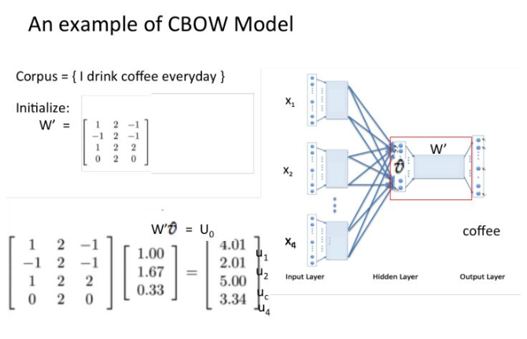

系列文章
这个是系列博客, 所有文章链接都列在这里, 并持续更新中。
- 文本向量化理论和实践教程
- 文本向量系列-如何基于拼音构建字向量
- 文本向量系列-如何基于笔画+拼音构建字向量/
- 文本向量系列-如何基于词频矩阵和TF-IDF权重构建词向量/
- 文本向量系列-基于潜在语义分析的词向量
概念
神经网络的词向量表示法是基于一个哲学: 词的上下文环境决定了词的意义, 所以在训练词向量的时候, 是通过词的上下文来计算词向量, 因而这样的词向量也具有了上下文的语义信息。
基于神经网络生成的词表示一般称为词向量、词嵌入（wordembeding），狭义上，与分布表示（distributional representation）相对，也称为分布式表示（distributed representation）。该表示将每一单词映射到一个低维、稠密的实数向量上，向量的每一维代表单词的潜在特征，且该特征能够捕捉到有用的语法和语义属性。词向量的最大优势在于我们可以相对快速、有效地根据向量间的距离（比如余弦距离）判断单词的相似性，原因在于语义或语法相似的单词拥有相似的向量表示。词向量的构建主要依赖于神经网络模型，神经网络能够非常灵活地以线性组合方式表示任意n-gram词组，且参数以线性速度増长，相对于基于矩阵和聚类的分布表示，词向量能够捕捉到更多复杂、有用的语义信息。
word2vec
深度学习word2vec是Google的一款将词表征为实数值向量的高效工具, 其利用深度学习的思想, 通过训练把对文本内容的处理简化为K维向量空间中的向量运算, 而向量空间上的相似度可以用来表示文本语义上的相似度。在实际应用场景中, word2vec可以用于计算词的相似度、文档的相似度等, 也可以用来对文档进行情感分析等。
深度学习word2vec中有CBOW和Skip-gram两种神经网络框架可用于训练并得到参数, 参数迭代更新后得到的就是每个字的词向量。其中, CBOW模型是利用词wt上下文中的c个词去预测当前词;而Skip-gram模型恰好相反, 它是利用词wt去预测上下文中的c个词。本文采用CBOW架构训练模型, 其数学表达式为:
其中, wt为词典D中的一个词, 即通过和该词相邻的窗口T来预测wt出现的概率。p (wt/Contexti) 代表前后c个词出现的概率。该框架可表示为下图所示模型。
上述符号中, INPUT代表输入层, PROJECTION代表投影层, OUTPUT代表输出层, wt代表当前词语 (向量) , wt-2、wt-1、wt+1、wt+2代表当前词语的上下文, SUM代表上下文的累加和。输出层是以词典D中出现过的N个词作为叶节点, 并以词在语料库中出现的次数作为权值构造出的巨大二叉树, 该二叉树的构建算法为霍夫曼 (Huffman) 树。
训练流程
- 把word表示成one-hot向量
- one-hot词向量乘以W得到embeding的词向量
W的形状是VxN, 其中V是语料库的词典大小, N是词向量的维度, W中的数都是我们要训练的参数
- 训练神经网络, 输入是目标词的上下文的词向量, 输出是目标词的词向量, 或者相反
词向量相加:
乘以权重矩阵, 得到向量

经过softmax函数, 得到输出的词向量y, 优化目标是让向量y无限接近目标词的one-hot向量
- 最后的效果就是, 得到的词向量具有语义相关, 这些词向量其实都是嵌入在权重向矩阵W中的
实战:使用word2vec训练词向量
其实在这里有一篇文章已经非常详细的介绍了词向量的训练, 有兴趣的可以去看看:http://mlln.cn/2018/06/21/大数据揭示心理学规律(利用gensim训练词向量) 。这里只是为了文章完整性, 再演示一遍如何使用word2vec训练词向量。
语料库
这次我们使用中英文语料库, 语料库可以从这里下载:机器翻译语料库大全(免费下)), 我这里用的是中英文翻译语料, 下面是一些语料的例子。
1 | Hi. 嗨。 |
这些语料需要经过一些处理才能进行训练:
- 英文都转小写
- 中文需要分词
中文分词有很多工具可以用, tcharacters 模块是我们自己开发的, 利用了pyltp的分词功能, 大家可以访问这个页面(http://www.mlln.cn/2018/01/31/pyltp在windows下的编译安装/ )看pyltp的用法, 我这里就不再赘述。
1 | from tcharacters.ltp import ltp |
d:\mysites\deeplearning.ai-master\.env\lib\site-packages\gensim\utils.py:1197: UserWarning: detected Windows; aliasing chunkize to chunkize_serial
warnings.warn("detected Windows; aliasing chunkize to chunkize_serial")
测试分词: ['我', '跳', '进来', '没事', '了']
测试小写: ["i'm", 'ok']
读取数据
1 | fpath = './data/cmn.txt' |
训练词向量
1 | model = Word2Vec(min_count=1) |
d:\mysites\deeplearning.ai-master\.env\lib\site-packages\ipykernel_launcher.py:3: DeprecationWarning: Call to deprecated `iter` (Attribute will be removed in 4.0.0, use self.epochs instead).
This is separate from the ipykernel package so we can avoid doing imports until
(1053714, 1354925)
获取词向量
1 |
|
d:\mysites\deeplearning.ai-master\.env\lib\site-packages\ipykernel_launcher.py:1: DeprecationWarning: Call to deprecated `__getitem__` (Method will be removed in 4.0.0, use self.wv.__getitem__() instead).
"""Entry point for launching an IPython kernel.
array([-0.3515351 , -1.3118509 , -0.6156184 , 0.15516779, 1.1383128 ,
-0.07251779, 0.23020045, -0.52926725, -0.76866174, -1.0467764 ,
-0.31507614, -0.15950103, -0.52083683, -0.36872956, -0.8011314 ,
0.4902281 , -0.5143664 , 0.3182344 , 0.8374854 , -0.3608164 ,
0.03827107, 0.406259 , 0.43838248, 0.21362059, 0.8257452 ,
-0.5523492 , 0.45621607, -0.8586342 , 1.0493718 , 0.11673231,
0.53156763, 0.01687986, 0.29621682, 0.13253698, 0.64017475,
-0.33693016, -0.7375661 , -0.7472176 , 0.8874524 , 0.5582712 ,
-0.89976597, 0.1379873 , 0.17002319, -1.0449922 , 0.23068163,
0.33250892, 0.13288185, -0.3183722 , 0.18426847, 0.31564566,
-0.17929862, -0.36949784, 0.4063392 , -0.38051793, 1.1805166 ,
0.40641445, -0.77273184, 1.2720692 , -0.04576248, -0.02152266,
-0.33833855, -0.59893143, 0.7793325 , 0.6381986 , -0.7024244 ,
0.03128409, -0.18902263, -0.14734915, 1.2367837 , -0.1975445 ,
0.02902468, 0.3363272 , 0.73686606, -0.05201327, -0.33830413,
0.6940766 , 0.10825578, 0.04985462, 0.20522375, -0.07374723,
0.31967226, 0.9696962 , -1.058341 , 1.0477684 , -0.47876847,
1.7466705 , 0.8541186 , 0.63398683, -0.48192078, 0.3477193 ,
0.05898082, -0.76784873, 0.5714927 , -0.16609748, -0.4489299 ,
-0.55590814, 0.4317831 , 0.38580045, -1.0079336 , -0.6381117 ],
dtype=float32)
获取相近的词
1 | model.wv.similar_by_word('我', topn=20) |
[('汤姆', 0.9596410989761353),
('湯姆', 0.9314063787460327),
('我們', 0.8994365930557251),
('understand.', 0.895287811756134),
('說謊', 0.8948416709899902),
('擺脫', 0.8923969864845276),
('我们', 0.8902699947357178),
('明白', 0.8879507780075073),
('当然', 0.8863658905029297),
('feelings.', 0.8862991333007812),
('让', 0.8845858573913574),
('喜', 0.8840827941894531),
('肯定', 0.8825405240058899),
('有时', 0.8797551989555359),
('讓', 0.8797382116317749),
('記', 0.8793071508407593),
('korea.', 0.8779969811439514),
('不', 0.8774625062942505),
('样子', 0.8769326210021973),
('喜歡狗', 0.8766648173332214)]
词向量的可视化
先把数据保存到文件中
1 | import numpy as np |
d:\mysites\deeplearning.ai-master\.env\lib\site-packages\ipykernel_launcher.py:7: DeprecationWarning: Call to deprecated `__getitem__` (Method will be removed in 4.0.0, use self.wv.__getitem__() instead).
import sys
打开网址: http://mlln.cn/vector/
上传刚才生成的数据文件, 不必担心数据泄密, 因为这里所有的数据都只是上传到了网页, 并没有回传到服务器, 数据只存在于你的电脑。
注意
本文由jupyter notebook转换而来, 您可以在这里下载notebook
有问题可以直接在下方留言
或者给我发邮件675495787[at]qq.com
请记住我的网址: mlln.cn 或者 jupyter.cn